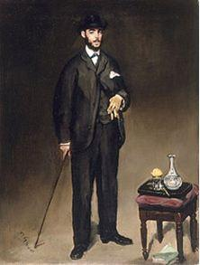

Un ami me disait, récemment, qu’il était étonné par le nombre de Chinois qui visitaient l’Europe en général et la France en particulier et il se demandait ce qui poussait les Chinois en Europe et non pas au Japon, en Thaïlande ou dans d’autres contrées plus accessibles.
En essayant de trouver une explication qui aille au-delà des truismes habituels, je me suis rendu compte que la Chine a énormément influencé la France au cours des siècles, en particulier au 18e, et qu’il n’est pas sot de penser que la réciproque est vraie. Dès lors cette recrudescence de touristes chinois n’est-elle pas le signe d’un « retour, inconscient, sur investissement » ?
René ETIEMBLE, sinologue reconnu, parlait de « France chinoise », terme qu’il explicite dans son livre, « L’Europe chinoise » : « Marcel Granet m'avait laissé entendre à ses cours que la route de la soie avait probablement permis aux Grecs de connaître plus qu'un peu de la culture chinoise. Cela continua durant l'Empire romain : on a trouvé sur les côtes du Viêt-Nam quantité de monnaies romaines qui prouvaient que la voie maritime doublait pour eux la voie terrestre : au point qu'il fallut interdire aux citoyens romains de se vêtir de soie ruineuse : les seules femmes dès lors eurent droit à ce luxe. Jusqu'à l'ambassade de Macartney, qui marque les débuts de l'impérialisme européen, dès lors acharné à s'asservir à l'Empire du Milieu, j'étudiai cinq années durant cette Europe chinoise, dont je livre ici la première moitié. Je m'arrête à Leibniz, sinophile entre tous. Le tome second commencera par un examen de Montesquieu, qui représente, lui, le début du courant contraire, instruit qu'il avait été par un jésuite dissident qui lui avait dit pis que pendre de la Chine. Avec la route de la soie, ce sont les missionnaires en effet, les jésuites au premier chef, qui renseignèrent l'Europe sur un pays qu'ils connaissaient fort bien, lui fournissant mathématiciens, fondeurs de bons canons pour battre la Russie, s'efforçant même d'installer le catholicisme là-bas en prônant des rites chinois, ce qui suscita, aux environs de 1700, une véhémente querelle entre les ordres rivaux, qui prétendaient avoir leur part du gâteau. [...] »
Voltaire place sa lecture de la Chine dans le cadre des vertus confucéennes d’unité, de modération, de tolérance, de critique de soi, d’amitié, d’humilité, d’humanité et d’hospitalité. Dans son « Dictionnaire philosophique portatif » il écrit, à propos de l’avancée de la civilisation chinoise « Maintenant, je vous demande si une Nation assemblée, qui a des Lois & des Princes, ne suppose pas une prodigieuse antiquité? » (page 80 de l’édition de 1765), du reste son admiration de la pensée confucéenne transparait dans l’article « Catéchisme chinois ou Entretien de Cu-Su, Disciple de Confutzée, avec le Prince K o u, fils du Roi de Lou, Tributaire de l'Empereur Chinois Gnen.van, 417 ans avant notre Ere vulgaire. »…
Pour Song CHUNG CHIN, « la Chine a occupé une place considérable dans la pensée des Lumières. Les Chinois, dont la civilisation était née avant l'antiquité païenne, avaient des lois, des institutions, une morale, une religion, des arts et des techniques. Mais n'étaient-ils pas athées ? Et s'ils l'étaient, ne devrait-on pas en conclure, puisqu'on les peignait comme sociables, polis, savants, équitables, que le monde pouvait exister sans la religion ? La Chine fournirait des arguments au nationalisme déiste ou athée contre toute la philosophie qui fondrait la valeur de l'homme sur son rapport avec le divin. Au premier rang de ces philosophes se situe Voltaire. Notre auteur, déçu par certains aspects de l'Europe, eut recours à l'Empire du Milieu pour pouvoir mieux illustrer sa pensée. »
À cette époque, au sujet de la Chine, on pouvait lire encore « Les Mémoires du comte de Gramont » (1715) d'Antoine de HAMILTON, écrivain irlandais d'expression française, qui faisait allusion à la civilisation chinoise, et « Les Mémoires de Saint-Simon », dans lesquels il traitait des rites de Confucius. Et que dire du Père Philippe COUPLET qui avait publié en 1687 son fameux « Traité sur Confucius»…
 Portrait de Théodore DuretCertes au XIXe siècle des auteurs comme Théodore DURET (Voyage en Asie, 1874), le Comte Ludovic de BEAUVOIR (Voyage autour du monde, 1872), Victor MEIGNAN (De Paris à Pékin, 1876), Aldabert frout de FONTPERTUIS (La Chine contemporaine, 1883) ou encore Marie René Roussel, Marquis de COURCY (L’Empire du Milieu, 1867) critiquent ou déprécient la Chine dans laquelle ils voient un pays qui n'a même pas derrière lui un passé de civilisation qui puisse véritablement impressionner l'Europe, influençant, peut-être, Jules Ferry qui affirmait que « Les vrais négociateurs avec les Chinois, ce sont les beaux et bons canons. » résumant ainsi la politique que mène les Puissances, à l’époque, vis-à-vis de l’Empire du Milieu (ce qui semble toujours d’actualité pour certains...). Mais, c’est oublier qu’un livre, paru en 1885, et qui a connu un vrai succès auprès du public français (on dirait un Best-seller aujourd’hui) : « La Cité chinoise » d’Eugène Simon a donné une perception beaucoup plus positive des Chinois. L’auteur, Consul de France en Chine, tente d’évaluer l'énorme potentiel de force que représentait la vieille Chine, puisque tout son livre est un essai d'analyse des composantes de cette force qui reste d’actualité si j’en croit un additif à l’édition de 1885 : « Les récents événements du Tonkin me dispensent de rappeler ceux de 1860. Malgré la supériorité de notre armée et de notre armement, on sait de quel prix nous avons payé les succès obtenus sur les Chinois. D'où venait donc la résistance qu'ils nous ont opposée, et contre laquelle nous aurions fini par nous briser ? Ni leurs ressources budgétaires, ni leur puissance militaire ne sont assurément comparables aux nôtres. Mais nous avions devant nous une muraille vivante, plus compacte et plus solide que tous les remparts du monde, édifiée par une civilisation vingt ou trente fois séculaire, fondée sur le travail et la justice » (cité par Gadoffre Gilbert dans « La Chine du XIXe siècle vue par deux consuls de France à Fou-Tchéou ». In: Cahiers de l'Association internationale des études françaises, 1961, N°13. pp. 55-69.) A la page 11 de son ouvrage, Eugène Simon livre une appréciation qui n’est plus d’actualité : « Beaucoup d’Européens croient que la Chine est, par excellence, le pays du despotisme. Or je demande ce que peut être un despotisme qui, pour plus de 500 millions d’êtres, ne s’exerce qu’au moyen de 25 à 30,000 fonctionnaires ; qui, pour se soutenir, n’a qu’une armée permanente d’une centaine de mille Tartares, quasi perdus au milieu d’une pareille fourmilière ? »
Une délégation de la rédaction de « Sans Frontières » lors de l’inauguration de la stèle de l’Amitié franco-chinoise à Pu-tian : François Maurice, notre rédacteur en chef adjoint, Alexandre Wattin et Romain Jacquet
Stèle de l’Amitié franco-chinoiseAujourd’hui, la fonction publique française avec des cadres administratifs d’Etat, bénéficiant d’un statut privilégié et formant à maints égards une caste, à la fois admirée, jalousée et critiquée, dont la tradition remonte à la fois aux grands commis de l’Etat de la royauté et à la fascination du Siècle des Lumières pour le système mandarinal chinois, et une fonction publique locale à la fois protégée et plus étroitement subordonnée aux pouvoirs politiques, avec une diversité de statuts pour les agents des services publics périphériques, font l’admiration des Chinois. Ils envoient, en France, des délégations de hauts responsables chargés de la gestion des ressources humaines pour y rencontrer des spécialistes sur le terrain afin de se faire expliquer notamment la politique de formation et de développement des compétences au sein des écoles de la fonction publique. (l’Institut régional d’administration de Metz reçoit depuis 2001 une délégation chinoise chaque année par exemple). Le recteur de l’Académie de Toulouse me confiait, en 2007, que le nombre de Chinois qui choisissaient de venir étudier à Toulouse connaissait une croissance quasi exponentielle et qu’ils représentaient la majorité des étudiants étrangers toutes disciplines confondues. Le fait que le pôle aéronautique français soit à Toulouse n’a, bien sûr, strictement rien à voir… La liste des étudiants étrangers reçus à Polytechnique montre, également, une prédominance de noms d’origine chinoise (même s’il faut relativiser car le nombre d’étudiants étrangers à l’X est, tout de même, peu important).
Songez, enfin, que l’Institut Français de Pékin attribue chaque année, depuis 2009, le prix Fu Lei qui vise à récompenser les meilleurs ouvrages traduits du français et publiés en Chine. En 2015, le prix a été remis à la Maison Hermes de Shanghaï, tout un symbole.
La France et la Chine ont une histoire commune, dès lors, comment s’étonner qu’une partie de la population chinoise (il y a également un phénomène d’échelle car n’oublions pas que 0.01 % de la population représente près d’un million de personnes) souhaitent visiter cette Europe, qui fut si fascinée par leur civilisation, et paraissent submerger les autres touristes ?
P. T.-H.
Liste des lauréats du Prix Fu Lei 2015
Dans la catégorie « Littérature » :
Le Liseur du 6h27, Jean-Paul Didierlaurent, trad. Zhou Xiaoshan, éd. Beijing Imaginist Time Culture Co., Ltd / Guangxi Normal University Press.
Catégorie « Essai »:
La preuve par la Chine : la « Description » de J.-B. Du Halde, jésuite, 1735, Isabelle Lan-dry-Deron, trad. Xu Minglong, éd. The Commercial Press (Shanghai).
Catégorie « Jeune Pousse »:
La querelle de l’art contemporain, Marc Jimenez, trad. Wang Mingnan, éd. Peking University Press.

Partager cette page